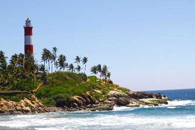

Kozhikode is a coastal city in the south Indian state of Kerala.
It was a significant spice trade center and is close to Kappad Beach, where Portuguese explorer Vasco da Gama landed in 1498.
The central Kozhikode Beach, overlooked by an old lighthouse, is a popular spot for watching the sunset.
Thikotti Light House

Said to be built on the remains of a shipwreck, the Thikkoti Lighthouse is one of the major attractions of Kozhikode.
Located on a rocky shoreline, the place is best known for the scenic views it offers as well as several species of nomadic birds.
Beypore

Beypore is a cosy coastal town tucked away in the small but striking Kozhikode District.
Located at the mouth of the energetic Chaliyar River, this town is covered in
vibrant shades of green and surrounded by mystic shades of blue.
When under the reign of Tipu Sultan, who was the ruler of Mysore,
this town was named Sultan Pattanam.
Kakkayam

Kakkayam is a dam site located in Kozhikode of Kerala state surrounded by lush greenery.
The distance is about 15 km from Kakkayam Bus stop.
'Orakkuzhi' is a waterfall located just after the Dam.
Near the dam location, different animals including elephants can be seen.